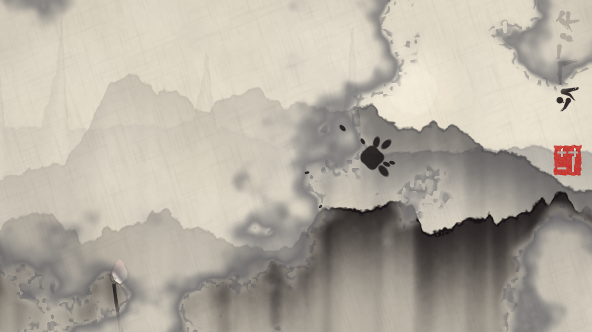
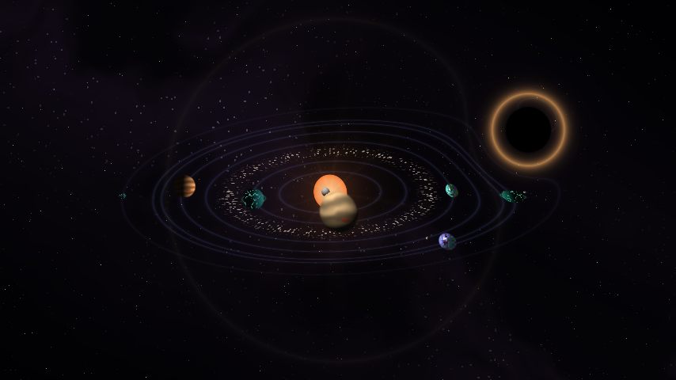

Bloomcast
Eighteen painted scenes and a neon collage that react to your microphone (humming, clapping, talking, or any song playing nearby), a song file, your camera and your face. The background can be transparent, so it can be layered over your own video.



Listening
The microphone is the default input. It is analysed and never played back. For the first three seconds it learns the room's noise and takes it off, so a quiet room reads as silence. Tempo is tracked live, and the song's sections come from its loudness: silence is empty, quiet is a verse, rising is a pre-chorus, loud is a chorus, and a sudden drop out of a chorus is a dissolve.
Drop in any song instead and it plays at once, while the page finds its tempo, its strongest hits and its sections. There is also a demo loop, 70 seconds at 110 bpm, synthesized from scratch and released under CC0.
The scenes
Glass tree, ink-wash sumi-e, deep-sea glow, stained glass, kaleidoscope tunnel, solar system, ancient ruins, forest bathing, the ocean, aurora over tundra, desert dunes at night, neon city in rain, origami cranes, clockwork orrery, coral reef, crystal cave, mycelium network and paper-cutout theatre. The collage (line-art flowers, Greek columns, a bust, a neon grid, a striped sun) is drawn three ways: vaporwave neon, ink line art and phosphor CRT.
You, in the picture
Switch the camera on and you are cut out of your room and stood in front of the scene, with no green screen; several people in front of one camera all stay in. An open mouth blooms the scene, a smile warms the light, and the scene shifts against where your head is, like looking through a window. Record a 7, 15 or 30 second clip in portrait, square or landscape.
Next: shared rooms
People in different places drive one scene together from a link. Each browser listens and watches locally and sends only numbers, about twenty a second, so a clap in one city hits the kick in another. No audio and no video leave the device.
the browser: WebGL, Web Audio
One small server for rooms